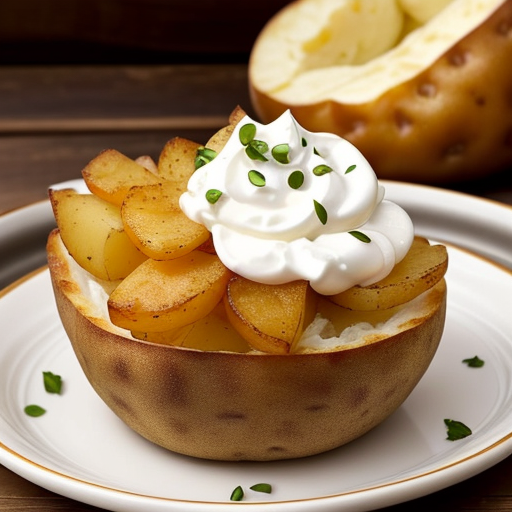

Creamy Cheesy Baked Potato

The Creamy Cheesy Baked Potato is a delectable and comforting dish that combines the earthy goodness of baked potatoes with the rich creaminess of cheese and cream. This dish is a delightful blend of flavors and textures, making it a perfect side dish or even a satisfying main course.
Ingredients:
For the Baked potatoes
- • 4 large russet potatoes
- • Olive oil
- • Salt and pepper
- For the Cheese and Cream Sauce:
- • 1 cup heavy cream
- • 1 cup shredded cheddar cheese (or your favorite melting cheese)
- • 1/2 cup grated Parmesan cheese
- • 2 cloves garlic, minced
- • 1/4 teaspoon nutmeg (optional)
- • Salt and pepper to taste
- • Chopped fresh chives or parsley for garnish
Instructions:
- Preheat your oven to 400°F (200°C).
- Wash the russet potatoes thoroughly and pat them dry. Prick the potatoes all over with a fork to allow steam to escape during baking.
- Rub the potatoes with a little olive oil, and then season them generously with salt and pepper. This will give the potato skin a delicious flavor.
- Place the seasoned potatoes directly on the oven rack or on a baking sheet lined with aluminum foil. Bake for about 45-60 minutes, or until the potatoes are tender and the skins are crispy.
- While the potatoes are baking, prepare the creamy cheese sauce. In a saucepan, heat the heavy cream over medium-low heat. Add the minced garlic and stir until fragrant, about 1-2 minutes.
- Reduce the heat to low, and gradually whisk in the cheddar cheese and Parmesan cheese until the sauce is smooth and creamy. Be patient, and make sure not to overheat the sauce, as it can become grainy. Add nutmeg, salt, and pepper to taste. Keep the sauce warm on low heat.
- Once the baked potatoes are done, remove them from the oven and let them cool slightly for a few minutes. Slice each potato open lengthwise, fluffing the insides with a fork.
- Pour the creamy cheese sauce generously over each potato, allowing it to seep into the nooks and crannies of the fluffy potato flesh.
- Garnish with chopped fresh chives or parsley for a burst of color and flavor.
- Serve your Creamy Cheesy Baked Potatoes as a delightful side dish or enjoy them as a satisfying main course.